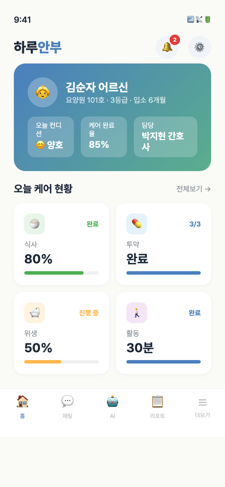
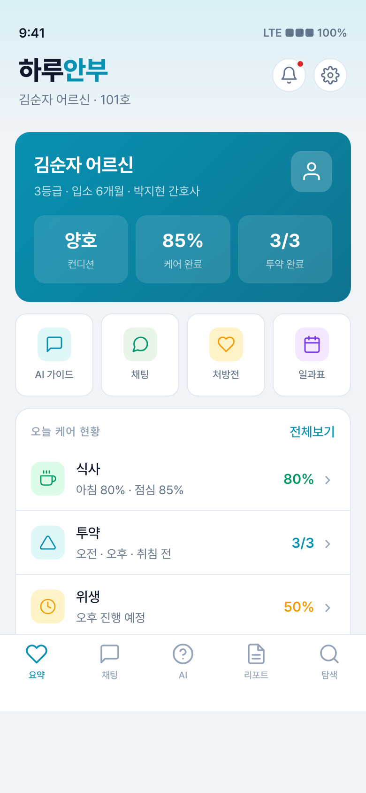

HARU ANBU
06Four Roles
같은 하루를 네 사람이 각자의 언어로 봅니다
네 역할은 필요한 정보와 읽는 속도가 전부 다릅니다. 가족은 안심을, 어르신은 큰 글씨를, 요양보호사는 빠른 입력을, 의료진은 맥락을 원합니다. 토큰과 컴포넌트는 공유하되 밀도 · 글자 크기 · 기기까지 역할에 맞춰 다르게 잡았습니다.
Caregiver
요양보호사 — 오늘


01
입력은 이 한 명뿐. 체크 한 번으로 끝납니다.
Family
가족 — 홈

02
멀리 있어도 매일 안부를 받습니다. 맨 위에 옵니다.
Clinician
의료진 — 홈

03
판단이 아니라 맥락. 기록을 시간순으로 훑습니다.
Resident · Tablet
어르신 — 오늘


04
어르신도 사용자입니다. 글자를 키우고 버튼을 손바닥만 하게 만들면 폰에는 정보가 두 개밖에 안 들어갑니다.
기기를 바꾼 결정
글자 크기와 터치 영역을 먼저 정하고 기기를 나중에 골랐습니다.
좌우 분할
왼쪽은 가족이 보낸 것, 오른쪽은 지금 할 일. 시선이 오갈 필요가 없습니다.
고정된 두 버튼
말하기 · 도움은 어느 화면에서든 같은 자리에 있습니다.
07결정의 흔적 — 무엇을 지웠는가
v1 · 초기

이모지 · 그라데이션 · 5탭
v4 · 중간

아이콘 정리 · 컬러 필 잔존
최종
전부 제거
—이모지 30건 · 20종을 단일 아이콘 세트 15종으로. 이후 0건을 코드가 강제합니다.
—그라데이션 1건과 배경 컬러 필을 지우고 위계를 타이포와 간격으로 옮겼습니다.
—"케어 완료율 85%"를 삭제. 종사자 평가 지표로 읽히는 수치였습니다.
—5탭을 4탭으로. 쓰지 않는 탭이 선택지를 늘리고 있었습니다.
가족 앱 · 알림
혈압이 평소보다 높게 측정됐어요
150/95mmHg
"이상 감지"가 아니라 측정 사실만 말합니다. 판정은 앱이 하지 않습니다.
요양보호사 앱 · 소통확인 요청
이정숙 어르신 · 미열
체온 37.4°C — 평소보다 0.8도 높음. 마른기침 3회 동반
사람에게 확인을 요청할 뿐, 위험도를 매기지 않습니다.
08Design System
서로를 향해 굽은 두 곡선.
멀리 있는 가족과 가까이 있는 어르신, 그 사이를 잇는 케어팀의 시선이
한 점에서 만나는 형태입니다.
보호자 블루
#2C7AFC
멀리 있는 가족에게 약속하는 안심의 톤. 로고와 핵심 액션의 기준색.
케어 그린
#22C55E
케어팀이 함께 쓰는 임상 톤. 완료 · 정상 · 안전 신호의 기준.
환자 오렌지
#FB923C
부담 없는 액센트. 큰 글자 · 넓은 터치의 어르신 시점 톤.
안심지수
복약
SOS
영상통화
식사
리포트
방문 케어
일정
수면
활동
체크리스트
인계
음성 인계
알림
가족
357개
디자인 토큰
여섯 제품이 같은 규칙을 공유합니다.
39개
고유 화면
클릭해서 동작하는 고충실도 프로토타입.
6개
제품
앱 4 + 의료진 웹 + 온보딩.
10종
자동화 스크립트
검사 5종 + 정리·생성 5종. 사람 눈이 못 잡는 것을 코드가 잡습니다.
haruanbu.site
making-of
완성본 기준 이모지 0 · 그라데이션 0 — 위 v1 시안은 지우기 전의 기록입니다
haruanbu.site
02 / 02